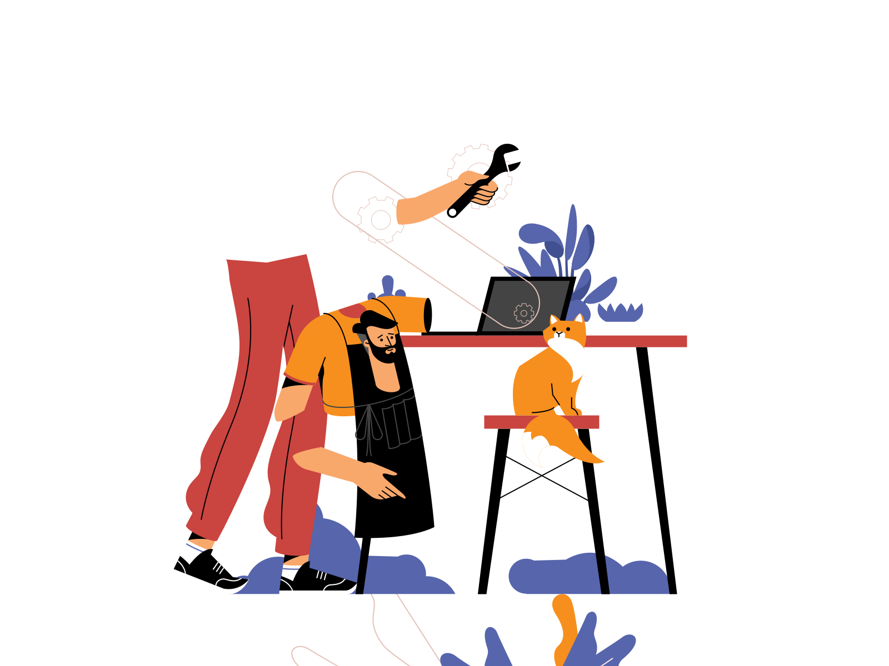

About Me
🎬电影爱好者，热爱音乐🎸、摄影📹
游泳运动员🏊
钟爱世界各地的美食
喜欢长着棕榈树和椰子树的海岛🌴
历史爱好者（虽然并不怎么记得住❌
A dreamer (各种意义上的)
独处时是个神秘主义与不可知论主义者，现实中是个脚踏实地的唯物主义者
最后放一句自己最喜欢的句子，也出现在博客封面。
出自莎士比亚《The Tempest》:”What’s past is prologue.”
中文翻译的也很棒，“凡是过往，皆为序章”。
徐逸洋
☎️ (+86) 13764153301
·
✉️
Michael.Xu@sjtu.edu.cn
·
GitHub:
Yiyang-Xu
🎓Education
- Shanghai Jiao Tong University, UM-SJTU Joint Institute, 2018.9 - 2022.8
- Bachelor of Engineering: Electronic and Computer Engineering
- Minor in Data Science
💼 Working Experience
China Industrial Securities CO., LTD., 兴业证券经纪与金融研究院
Equity Analyst Assistant, 2020.12 - 2021.4
- Gather data from stock market and companies’ financial statement using Python crawler.
- Appraise companies’ development status and future trend by building valuation models.
- Write research reports to provide investment recommendations for fund companies.
📖Research Experience
Advanced Network Laboratory (ANL) at Shanghai Jiao Tong University (上海交通大学先进网络实验室)
Research Assistant, 2021.7 - 2021.10
- Analyze the user-goods interaction history data of Alibaba e-commerce platform.
- Investigate how to describe users’ preference using hierarchical features.
- Construct recommendation system based on Graph Neural Networks (GNN).
Smart Display Lab (SDL) at Shanghai Jiao Tong University (上海交通大学智能显示实验室)
Research Assistant, 2019.12 - 2021.6
- Develop an algorithm framework of 3D navigation and target detection for AR.
- Process time series data from LiDAR Scanner using deep learning framework.
- Build indoor 3D map by applying Delaunay triangulation to the point cloud.
🏆 Honors & Awards
- Publication on SID Symposium Digest of Technical Papers.
- Presentation on International Conference on Display Technology (ICDT 2021).
- 2020 Yu Liming Scholarship of Shanghai Jiao Tong University (俞黎明奖学金).
- 2020 Interdisciplinary Contest in Modeling- Meritorious Winner (美赛M奖).
- 2018-2019 Undergraduate Excellent Scholarship of SJTU.
- Outstanding Member of UM-SJTU Joint Institute.